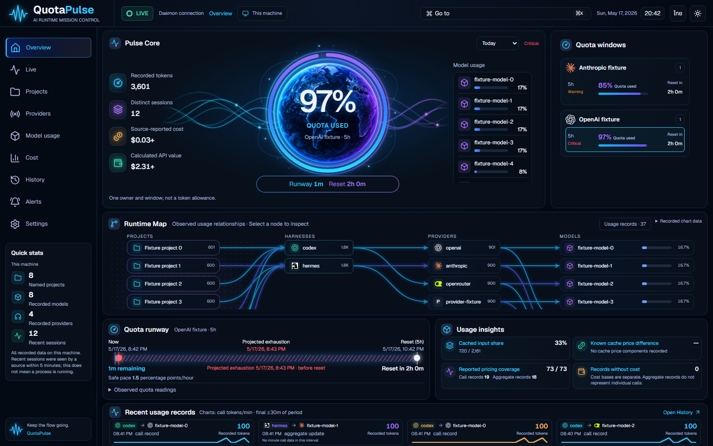

ภาพแอปใช้ daemon กับฐานข้อมูลจำลอง ชื่อ ตัวเลข และกราฟเป็นข้อมูลทดสอบ ไม่มีคะแนนความเหมือนหรือการอนุมัติ visual acceptance แอปใช้งานแสดงข้อมูลจริง หน้า History ใน viewer แสดงสถานะเลือก record เพื่อเทียบแผงรายละเอียด
ภาพต้นฉบับมีเฉพาะธีมมืด ใช้ไฟล์ refs ที่ตรวจ hash และเก็บไว้ในชุด v1.44 โดยไม่แก้ไข

 Production app — synthetic fixture
Production app — synthetic fixture